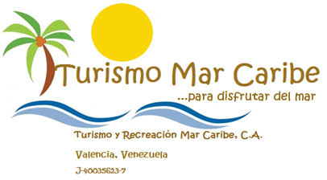

Bodas Playeras
En Turismo Mar Caribe, C.A. nos especializamos en la coordinación y realización de Bodas Playeras y nuestro objetivo es que usted disfrute a plenitud de uno de los momentos más importantes de su vida. La boda perfecta que siempre recordará con orgullo y felicidad.
Nuestra misión es crear un evento inolvidable para usted y sus invitados con una planificación impecable y de excelente calidad.
Nuestra misión es crear un evento inolvidable para usted y sus invitados con una planificación impecable y de excelente calidad.
Nuestro ámbito de actuación es Morrocoy (Tucacas / Chichiriviche), Los Roques, Isla de Margarita y Carenero, porque sólo conociendo profundamente en las áreas en las que trabajamos y a los profesionales que operan en la misma, podemos ofrecer un servicio con todas las garantías. Turismo Mar Caribe y sus proveedores son sinónimos de calidad, exclusividad, profesionalismo, dedicación y trato personalizado.
Bodas Playeras ofrece en los hermosos escenarios de Morrocoy, lo siguiente:
- Celebración de la Boda a orillas del mar
- Decoración de toda el área del evento
- Sillas y mesas decoradas para los novios y sus invitados
- Mesa decorada para la torta y para el brindis
- Instalación de toldos decorativos
- Decoración para la mesa del banquete
- Brindis
- Catering: servicio de buffet para todo tipo de comidas, pasapalos (consultar opciones)
- Estaciones de comida
- Pastel de bodas
- Mesa de quesos
- Maquillaje y peluquería profesional
- Música: Orquestas, conjuntos musicales, grupo de tambores, grupos de samba, DJ´s, animadores o la música de su agrado
- Hora Loca estilo playero
- Fotos y videos digitalizados entregados en CD
- Traslados de los novios y sus invitados (según su selección en yates, lanchas, peñeros)
- Hospedaje en hoteles y posadas
- Fuegos artificiales – Espectáculos pirotécnicos (Opcional)
- Regalos o souvenirs para los invitados
- Coordinadores de bodas
- Planificación de su Luna de Miel
Requisitos para contraer matrimonio
Matrimonio Civil
- Constancia de Residencia
- Si alguno o ambos contrayentes es divorciado, deberá consignar copia certificada de la sentencia firme que declare nulo o disuelto el matrimonio anterior, con la constancia de estar ejecutoriada
- Si alguno o ambos contrayentes tienen hijos menores de edad, deberán presentar:
- La respectiva Curatela acordada por el Tribunal de Protección del Niño y el Adolescente
- Original y Copia de las Cédulas de Identidad
- Original y Copia de la Cédula de Identidad de los Testigos
- Copia de las Partidas de Nacimiento
Matrimonio Eclesiástico
- Ambos deben estar bautizados y presentar Fé de Bautismo actualizada
- Haber hecho la Confirmación y presentar el acta de la misma
- Presentar constancia de Matrimonio Civil
- Asistir al Curso Prematrimonial
- No haber estado casados antes por la Iglesia
- Presentarse ante el Párroco para que autorice la ceremonia
Arte Floral
Turismo Mar Caribe ofrece una gran variedad de artes florales para su Boda de Playa. Contamos con arreglos florales elaborados especialmente para estos eventos de mar y garantizan la belleza, realce y durabilidad durante el evento. Contamos con:
- Diseños florales
- Centros de mesa
- Decoración de mesones
- Detalles en las sillas
- Decoración de salones
- Bouquets de novias
- Boutonnier de novio
- Bouquets madrinas de honor
- Rosas personalizadas
- Decoración Nave Central Iglesia
- Decoración del Altar
- Arcos de flores
- Gazebos
- Camino de pétalos
- Camino de antorchas
- Decoración para Bodas en yate o catamarán
- Decoración para Bodas en la Playa


Decoración
Ofrecemos diversas alternativas en cuanto a decoración se refiere. Tenemos:
- Toldos de diversos tamaños (con o sin aire acondicionado)
- Pisos de parquet
- Finas sombrillas con bases de madera
- Jardines con diversas plantas naturales
- Iluminación inteligente y luz indirecta para la locación de su Boda de Playa
- Caminerías y ambientación de exteriores


Catering


Luna de Miel
En Turismo Mar Caribe planificamos y realizamos la Luna de Miel de los recién casados dando una experiencia única, inigualable. Tú escoges el destino, bien sea nacional o internacional; nosotros realizamos todos los trámites de alojamiento, boletos aéreos, paseos o tours guiados, espectáculos, etc.
Conversa con nosotros para orientarte de acuerdo a tus requerimientos y posibilidades económicas.


Cotizador Online
Turismo y Recreación Mar Caribe, C.A.
J-40035623-7
Valencia, Venezuela
+58(241)417.6185
+58(424)493.4349
+58(412)848.2879
turismomarcaribe1@gmail.com
turismomarcaribe2@gmail.com